Torque Converter Housing Disassemble & Service
Mainshaft Bearing and Oil Seal ReplacementSpecial Tools Required
^ Adjustable bearing puller, 25-40 mm 07736-A01000B or 07736-A01000A
^ Driver 07749-0010000
^ Attachment, 62 x 68 mm 07746-0010500
^ Attachment, 72 x 75 mm 07746-0010600
1. Remove the mainshaft bearing and oil seal using the adjustable bearing puller (25-40 mm) and a commercially available 3/8 "-16 slide hammer (A).
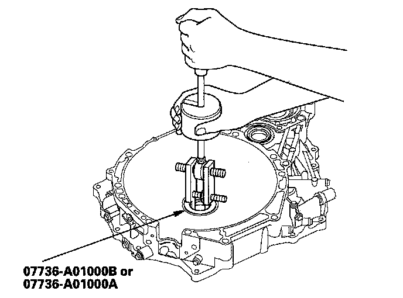
2. Install the new mainshaft bearing until it bottoms in the housing using the driver and the attachment (62 x 68 mm).
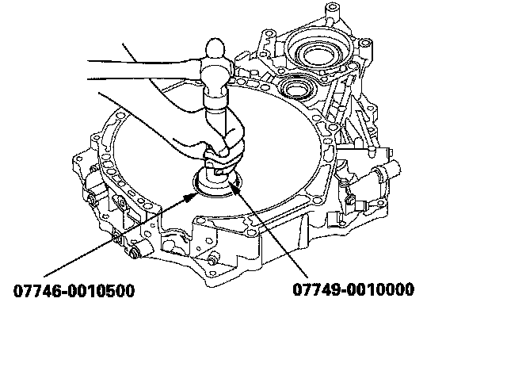
3. Install the new oil seal flush to the housing using the driver and the attachment (72 x 75 mm).
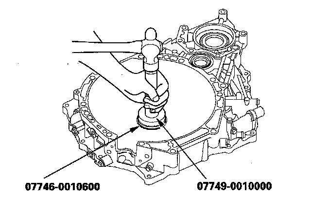
Countershaft Bearing Replacement
Special Tools Required
^ Adjustable bearing puller, 25-40 mm 07736-A01000B or 07736-A01000A
^ Driver 07749-0010000
^ Attachment, 78 x 80 mm 07NAD-PX40100
1. Remove the countershaft bearing from the torque converter housing using the adjustable bearing puller (25-40 mm) and a commercially available 3/8 "-16 slide hammer (A).
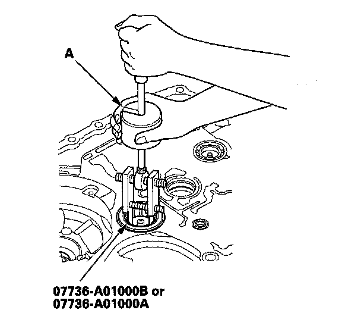
2. Install the ATF guide plate (A) into the housing, then install the new bearing (B) in the direction shown.
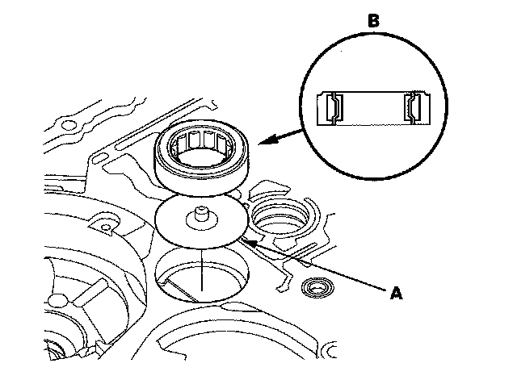
3. Install the bearing (A) in the housing using the driver and the attachment (78 x 80 mm); install bearing outer notch-cut (B) in depth (C) of 0-0.03 mm (0-0.001 in.) below the housing surface (D).
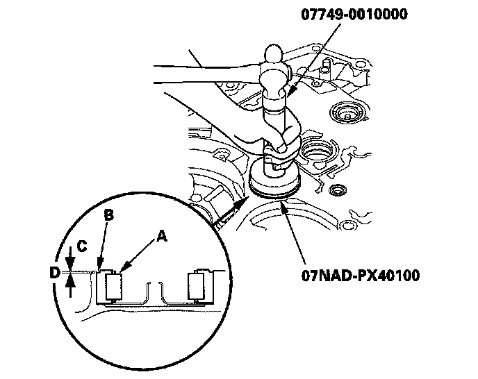
Secondary Shaft Bearing Replacement
Special Tools Required
^ Adjustable bearing puller, 25-40 mm 07736-A01000B or 07736-A01000A
^ Bearing remover shaft set, 30 mm 07936-8890300
^ Bearing remover shaft handle 07936-3710100
^ Sliding hammer weight 07741-0010201
^ Driver 07749-0010000
^ Attachment, 37 x 40 mm 07746-0010200
^ Attachment, 62 x 68 mm 07746-0010500
1. Remove the bolt, then remove the lock washer (A) and bearing set plate (B).
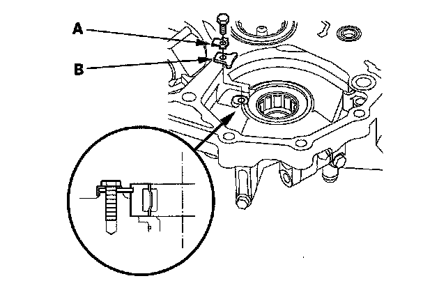
2. Remove the secondary shaft bearing from the torque converter housing using the adjustable bearing puller (25-40 mm) and a commercially available 3/8 "-16 slide hammer (A).
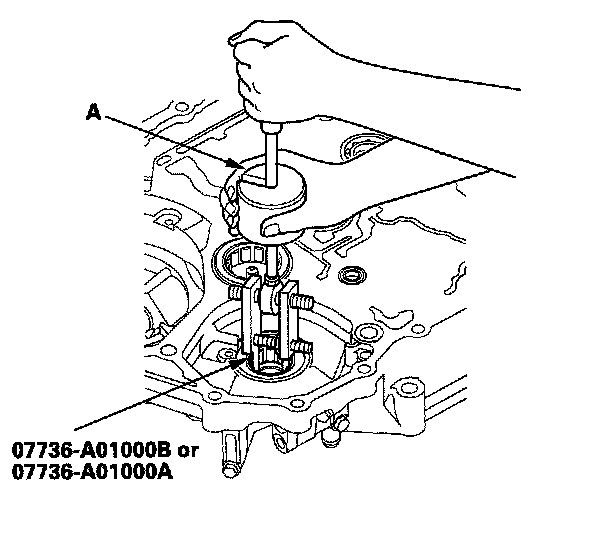
3. Remove the ATF guide collar from the torque converter housing.
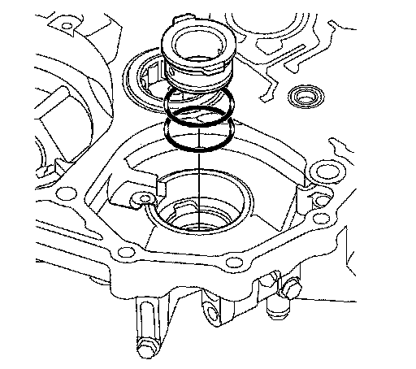
4. Remove the 29 x 39 x 9.5 mm secondary shaft bearing from the torque converter housing using the bearing remover shaft set (30 mm) the bearing remover shaft handle, and the sliding hammer weight.
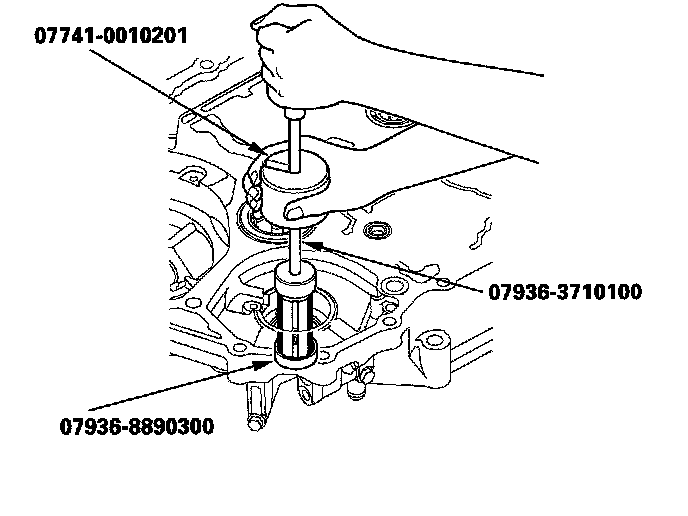
5. Install the 29 x 39 x 9.5 mm bearing into the torque converter housing using the driver and the attachment (37 x 40 mm).
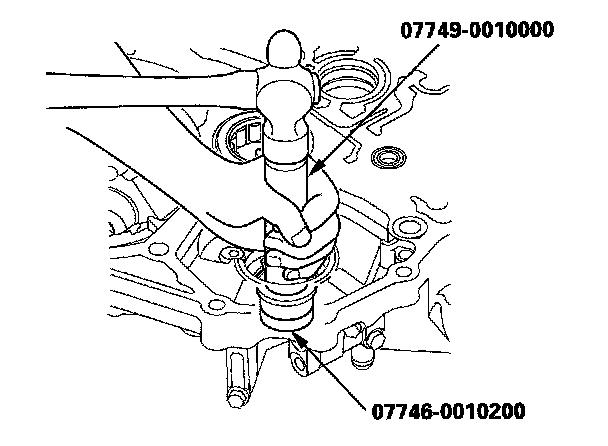
6. Install the new O-rings (A) on the ATF guide collar (B) then install the guide collar in the torque converter housing.
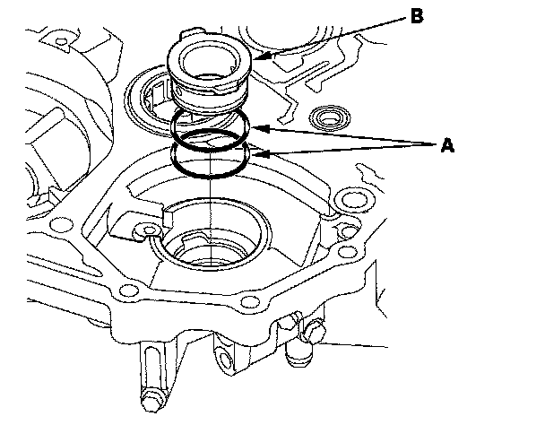
7. Install the bearing in the direction shown in the housing using the driver and the attachment (62 x 68 mm).
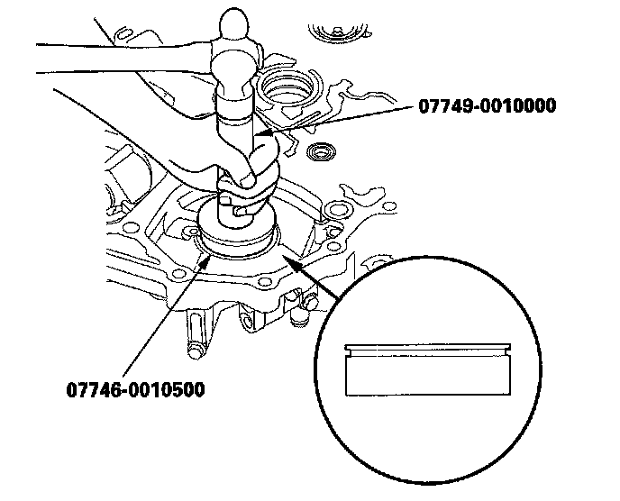
8. Check that the bearing groove aligns with the set plate mounting surface, then install the set plate (A) by aligning it with the bearing groove.
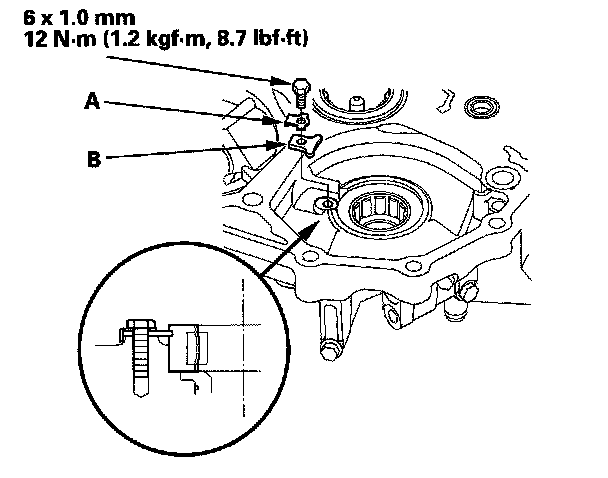
9. Install the new lock washer (B) and bolt, then bend the lock tab of the lock washer against the bolt head.
Intermediary Shaft Bearing Replacement
Special Tools Required
^ Adjustable bearing puller, 25-40 mm 07736-A01000B or 07736-A01000A
^ Driver 07749-0010000
^ Attachment, 52 x 55 mm 07746-0010400
1. Remove the intermediary shaft bearing from the torque converter housing using the adjustable bearing puller (25-40 mm) and a commercially available 3/8 "-16 slide hammer (A).
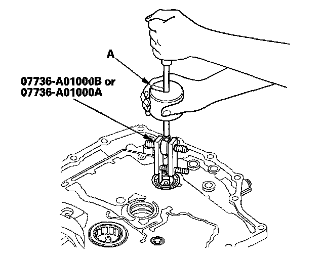
2. Install the ATF guide plate (A) then install the new bearing (B) in the housing.
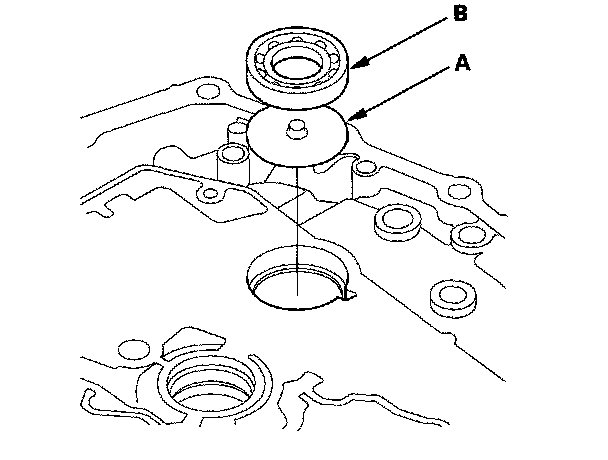
3. Drive the bearing into the housing using the driver and the attachment (52 x 55 mm).
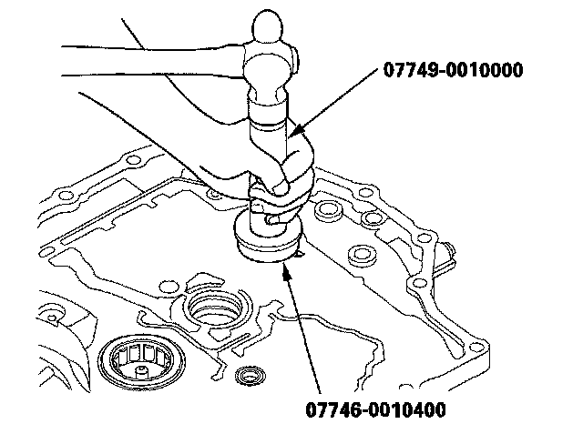
Park Lever Shaft Bearing Replacement
Special Tools Required
^ Bearing remover shaft set, 12 mm 07936-1660101
^ Sliding hammer weight 07741-0010201
^ Driver 07749-0010000
^ Attachment, 22 x 24 mm 07746-0010800
1. Remove the park lever shaft bearing from the torque converter housing using the bearing remover shaft set (12 mm) and the sliding hammer weight.

2. Install the new bearing until it bottoms in the housing using the driver and the attachment (22 x 24 mm).
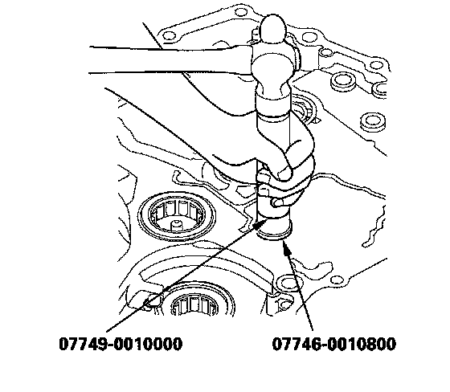